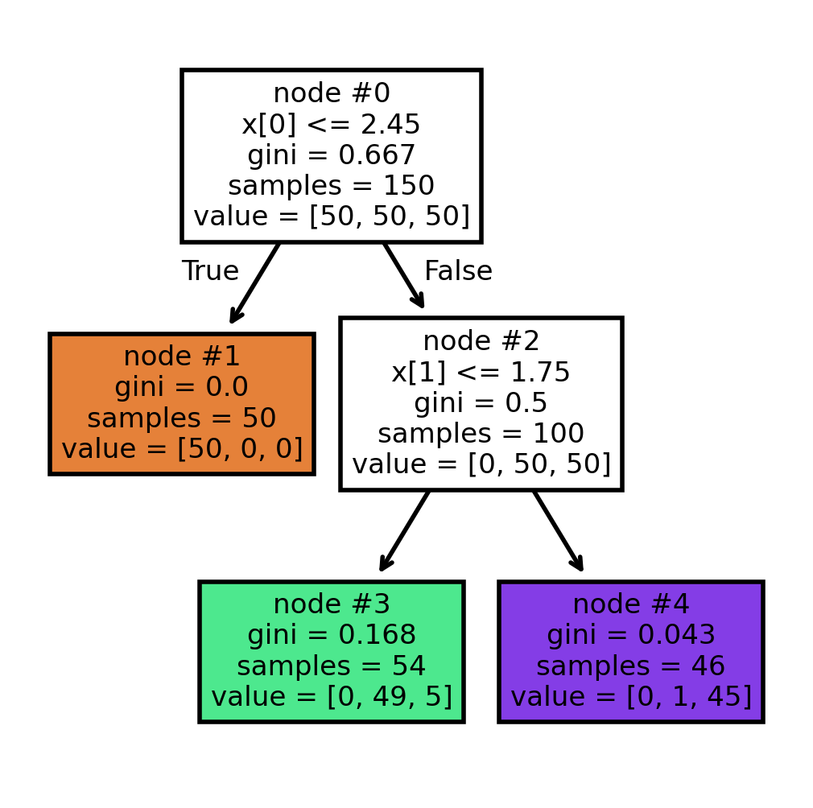
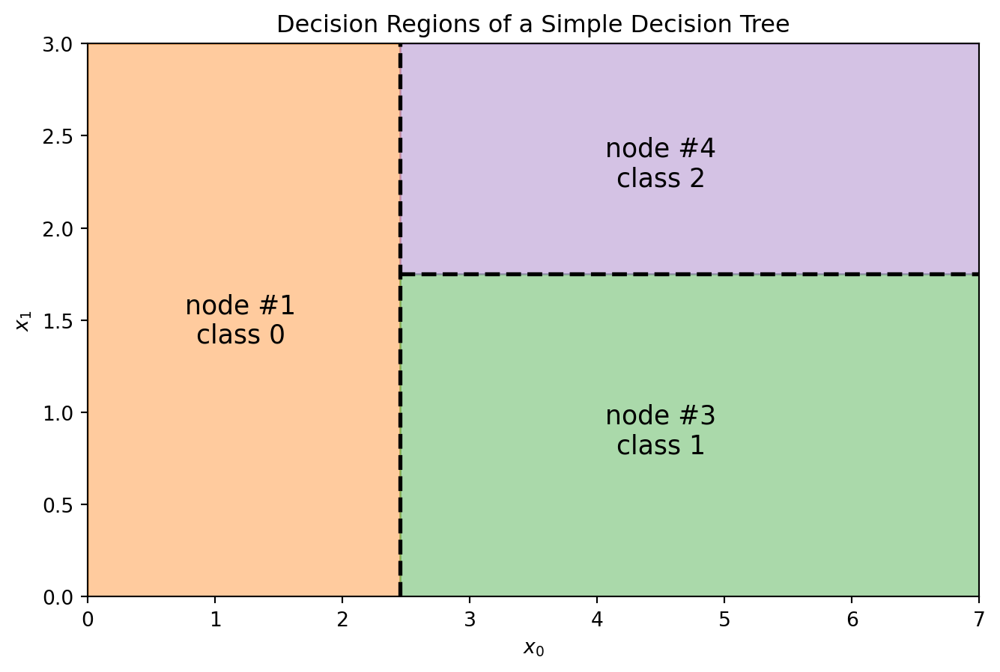
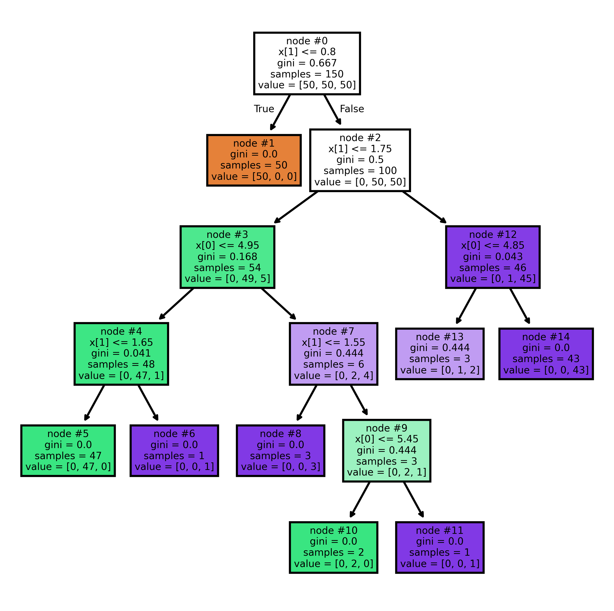
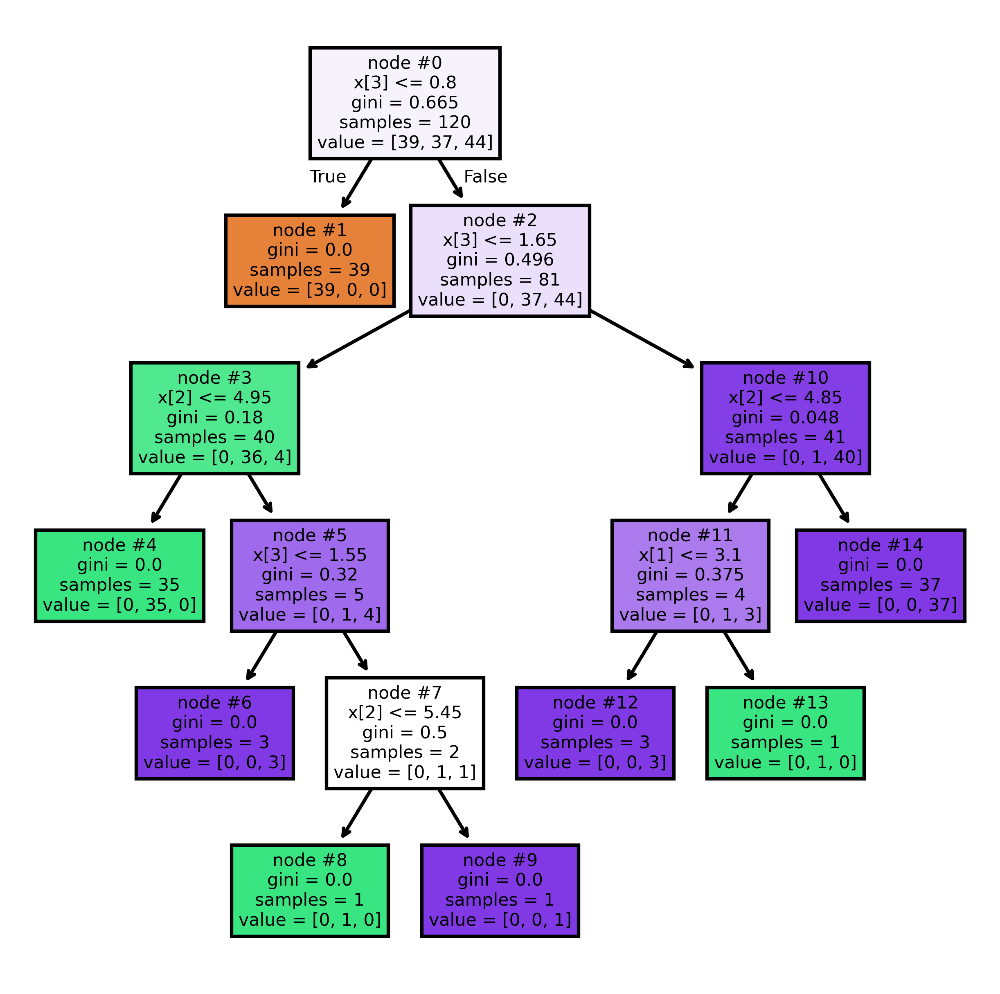
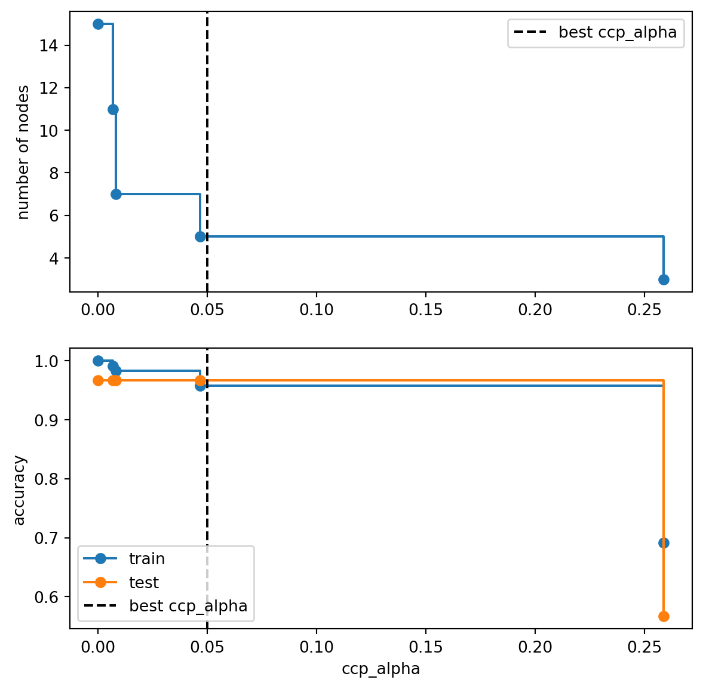
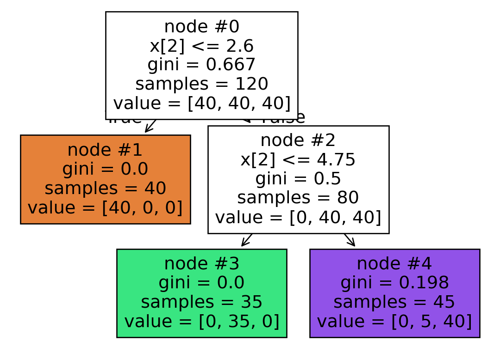
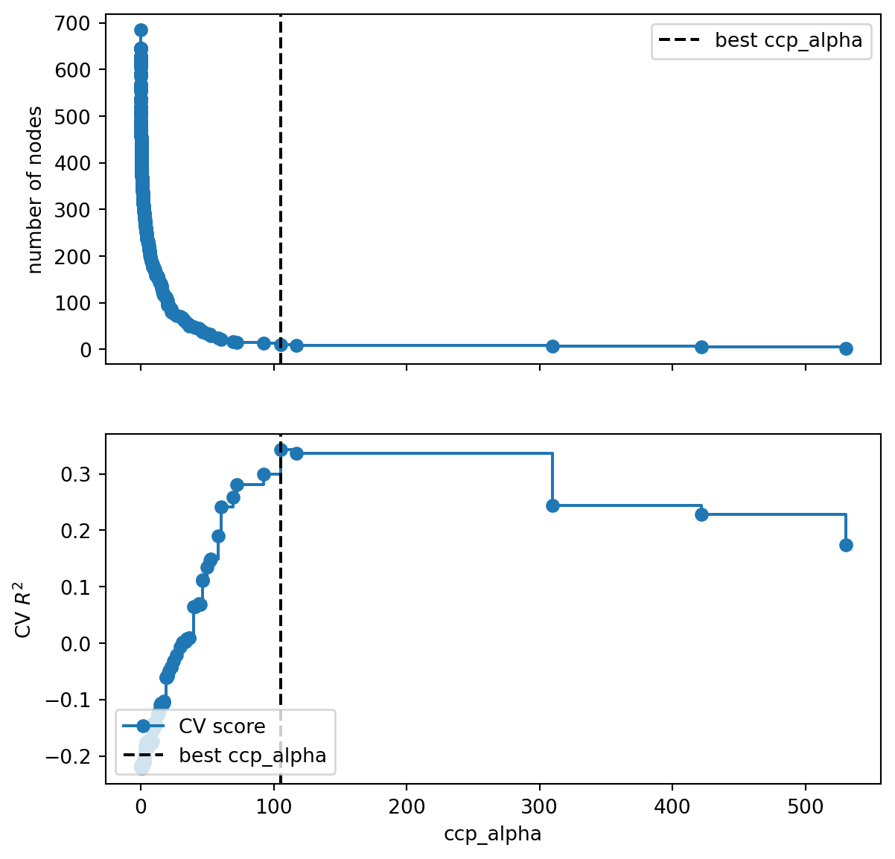

7 Tree-Based Methods
\[ \require{physics} \require{braket} \]
\[ \newcommand{\dl}[1]{{\hspace{#1mu}\mathrm d}} \newcommand{\me}{{\mathrm e}} % \newcommand{\argmin}{\operatorname{argmin}} \newcommand{\rss}{\mathrm{RSS}} \newcommand{\ols}{\mathrm{OLS}} \newcommand{\ridge}{\mathrm{ridge}} \newcommand{\lasso}{\mathrm{lasso}} \newcommand{\mle}{\mathrm{MLE}} \newcommand{\constant}{\mathrm{constant}} \newcommand{\resid}{\mathrm{residual}} \newcommand{\span}{\mathrm{span}} \newcommand{\gini}{\mathrm{Gini}} \]
$$
$$
\[ \newcommand{\pdfbinom}{{\tt binom}} \newcommand{\pdfbeta}{{\tt beta}} \newcommand{\pdfpois}{{\tt poisson}} \newcommand{\pdfgamma}{{\tt gamma}} \newcommand{\pdfnormal}{{\tt norm}} \newcommand{\pdfexp}{{\tt expon}} \]
\[ \newcommand{\distbinom}{\operatorname{B}} \newcommand{\distbeta}{\operatorname{Beta}} \newcommand{\distgamma}{\operatorname{Gamma}} \newcommand{\distexp}{\operatorname{Exp}} \newcommand{\distpois}{\operatorname{Poisson}} \newcommand{\distnormal}{\operatorname{\mathcal N}} \]
A decision tree is another nonparametric method, which learns a collection of simple if-then rules directly from the data.
The basic idea is:
- Split the feature space into regions.
- Continue splitting each region into smaller regions.
- Use the observations inside each final region to make predictions.
Example 7.1 (Example: A Classification Tree)
This is a classification tree. The tree repeatedly asks simple questions such as
- Is
x[0] <= 2.45? - Is
x[1] <= 1.75?
Each split divides the feature space into smaller regions.
This tree actually create the following splits in the feature space.

Based on the idea of a decision tree, a tree makes decisions by repeatedly asking questions of the form \(x_j \leq c\). Therefore, a tree has two important properties:
- It depends directly on the original features.
- The scale of a feature is usually not important.
As a result, we should expect that a tree is:
- sensitive to feature construction or feature combinations: A tree can only split on the features that are provided. If the useful signal is hidden in a combination such as \(x_1+x_2\) or \(x_1x_2\), a tree may need many splits to approximate that relationship.
- not sensitive to monotone transformations of a feature: For example, replacing \(x\) by \(\log(x)\) or \(2x+5\) does not change the ordering of the observations. Since tree splits mainly depend on ordering, the tree can usually produce an equivalent split after the transformation.
7.1 CART: Classification and Regression Trees
There are many algorithms for constructing decision trees. The most common one is called CART (Classification and Regression Trees).
CART has the following properties:
- It creates only binary splits;
- It can perform both classification and regression tasks:
- For classification, common splitting criteria include Gini impurity and entropy;
- For regression, common splitting criteria include residual sum of squares (RSS) and mean squared error (MSE).
7.1.1 Splitting a Dataset
At each step, CART searches over possible splits and chooses the split that produces the largest reduction in impurity (or prediction error).
NoteAlgorithm: Split the Dataset
Inputs: A dataset \(S={[\text{features},\text{target}]}\)
Outputs: The best split \((k,t)\)
- For each feature \(x_k\):
- For each candidate split value \(t\):
- Split the dataset into two subsets: \(G_l=\qty{\text{data with }x_k\le t}\), \(G_r=\qty{\text{data with }x_k>t}\).
- Compute the split cost function \(J(k,t)\)
- Keep the best split found so far
- For each candidate split value \(t\):
- Return the split \((k,t)\) with the smallest cost
The splitting algorithm is applied recursively.
NoteAlgorithm: CART
Inputs: A labeled dataset \(S\) and a maximal tree depth max_depth
Outputs: A decision tree
- Start with the original dataset \(S\)
- If the node is not pure and stopping conditions are not met:
- Find the best split
- Split the node into: \(G_l\) and \(G_r\)
- Apply the same procedure recursively to both child nodes
- Stop when:
- the maximal depth is reached, or
- the node becomes pure, or
- further splitting is impossible
When making predictions, a classification tree uses the most common class label in a region as the predicted value, while a regression tree uses the mean of the response values in the region as the predicted value.
7.1.2 Classification Trees: Gini Impurity
Classification trees are used when the response variable is categorical. A classification tree partitions the feature space into piecewise constant regions, where each region predicts either a class label or class probabilities.
In these notes, we use Gini impurity to measure the quality of a split.
Assume that a node contains \(n\) observations divided into \(K\) classes. Let \(p_i=\frac{n_i}{n}\) be the proportion of class \(i\). If we classify observations according to the class proportions:
- the probability an observation belongs to class \(i\) is \(p_i\)
- the probability we incorrectly classify it is \(1-p_i\)
Therefore the probability of misclassifying an observation from class \(i\) is
\[ p_i(1-p_i). \]
Summing over all classes gives
\[ \sum_{i=1}^K p_i(1-p_i). \]
Since
\[ \sum_{i=1}^K p_i=1, \]
we obtain
\[ \gini =\sum_{i=1}^K p_i(1-p_i) =1-\sum_{i=1}^K p_i^2. \]
Definition 7.1 (Gini Impurity) The Gini impurity of a node is
\[ \gini =1-\sum_{i=1}^K p_i^2, \]
where \(p_i\) is the proportion of class \(i\) inside the node.
Example 7.2 (Pure node) Suppose a node contains observations from only one class.
Then one of the probabilities equals 1 and all others equal 0.
Therefore
\[ \gini=1-1^2=0. \]
This is the minimum possible impurity.
A node with Gini impurity 0 is called a pure node.
Example 7.3 (Two-Class Example) Suppose we have two classes.
Let
\[ p_2=1-p_1. \]
Then
\[ \gini =1-p_1^2-(1-p_1)^2 =2p_1-2p_1^2. \]
When:
- \(p_1=0\) or \(1\), the impurity is 0;
- \(p_1=0.5\), the impurity is maximized.
Therefore, impurity is largest when the classes are perfectly balanced.
The impurity of a node alone is not enough. CART evaluates a split by examining the impurity of the child nodes after splitting.
Suppose a node \(G\) is split into \(G_l\) and \(G_r\). The split cost is
\[ J =\frac{|G_l|}{|G|}\gini(G_l) +\frac{|G_r|}{|G|}\gini(G_r). \]
A good split produces child nodes with low impurity, ideally creating nodes that are close to pure.
NoteEntropy
Entropy is another popular impurity measure. Its formula is
\[ \mathrm{Entropy} =-\sum_{i=1}^K p_i\log(p_i). \]
Entropy and Gini impurity usually produce very similar trees.
Because Gini impurity is slightly simpler computationally and conceptually, we mainly focus on it.
7.1.3 Regression Trees: RSS
Regression trees are used when the response variable is quantitative. Instead of predicting a class label, they predict numerical values.
Suppose a terminal node contains responses \(y_1\), \(y_2\), \(\ldots\), \(y_n\). The prediction for that region is usually the sample mean: \[ \hat y =\frac{1}{n}\sum_{i=1}^n y_i. \]
Therefore, regression trees approximate the regression function using piecewise constant regions.
For regression trees, CART typically minimizes the residual sum of squares (RSS). Sometimes the mean squared error (MSE) is used instead. Since MSE differs from RSS only by a constant scaling factor, minimizing one is equivalent to minimizing the other.
Suppose a split divides the data into two regions \(G_l\) and \(G_r\). The split cost is
\[ \rss = \sum_{i\in G_l}(y_i-\bar y_l)^2 + \sum_{i\in G_r}(y_i-\bar y_r)^2, \]
where \(\bar y_l\) and \(\bar y_r\) are the mean responses within the two regions. The best split is the one that minimizes this quantity.
7.1.4 Trees are local
A tree makes predictions using only observations inside a small region of the feature space. Suppose a tree partitions the feature space into regions. The prediction at a point \(x\) depends only on the region containing \(x\). As a result, tree predictions are local:
- nearby regions may have very different predictions
- only observations in the same local region affect the prediction
- changing distant observations usually does not affect the prediction
This is similar in spirit to KNN, where prediction also depends primarily on nearby observations.
7.1.5 Trees are nonlinear
A tree creates many if-then rules. Because of these recursive splits:
- the prediction function can change abruptly
- variable effects depend on the region
- interactions are created automatically
The prediction surface is therefore discontinuous and piecewise constant. Therefore, trees are nonlinear models.
7.1.6 Automatic interaction effects
One important property of trees is that they automatically create interaction effects.
For example, consider a tree with depth 3. One path through the tree may look like:
- if \(x_1 \le 1\)
- and \(x_2 \le 2\)
- and \(x_3 \le 3\)
- then predict \(y=1.1\)
Notice that the prediction depends on the combination of all three conditions simultaneously. Therefore, the effect of one variable may depend on the values of earlier splitting variables. In other words, the effect of \(x_3\) is not independent of \(x_1\) and \(x_2\). The split on \(x_3\) is only relevant inside the region defined by the earlier splits.
Therefore, trees naturally model interactions between variables.
This is very different from a standard additive linear model such as
\[ f(x)=\beta_0+\beta_1x_1+\beta_2x_2+\beta_3x_3, \]
where each variable contributes independently unless explicit interaction terms like \(x_1x_2\) are manually added.
7.2 Tuning hyperparameters
Building a decision tree is the same as splitting the training dataset. If we are alllowed to keep splitting it, it is possible to get to a case that each end node is pure: the Gini impurity is 0, or every element has the same response variable locally.
Example 7.4 (ALMOST all end nodes are pure)
Click to expand.
In this example, we let the tree grow as further as possible. It only stops when (almost) all end nodes are pure, even if the end nodes only contain ONE element (like #6 and #11).

In this example there is one exception. #13 node is not pure. We could list all data in node #13.
| x[0] | x[1] | y | |
|---|---|---|---|
| 0 | 4.8 | 1.8 | 1 |
| 1 | 4.8 | 1.8 | 2 |
| 2 | 4.8 | 1.8 | 2 |
All the data points in this node has the same feature while their labels are different. They cannot be split further purely based on features.
As the tree continues splitting the feature space into smaller regions, it learns increasingly fine details of the training set. Although this increases flexibility, it can also make the model overly sensitive to noise. Therefore, we usually do not want the tree to grow indefinitely.
There are two common ways to control a single tree growth:
- Pruning: first grow a large tree, then remove unnecessary branches afterward.
- Pre-pruning: stop the tree early by imposing restrictions during training.
7.2.1 Pruning
Pruning means removing branches from a tree. The pruning method introduced in CART is called Minimal Cost-Complexity Pruning (MCCP).
The idea is very similar to regularization in ridge or lasso regression: we balance goodness of fit against model complexity by adding a penalty term. In MCCP, the penalty is proportional to the number of terminal nodes (leaves) in the tree.
More specifically, the cost function is modified by adding a complexity penalty controlled by the parameter ccp_alpha. The parameter ccp_alpha is called the complexity parameter and is always \(\geq0\). Let \(T\) be a subtree, and let \(|T|\) denote the number of terminal nodes. The cost-complexity criterion is \[
C_\alpha(T)=J(T)+\alpha |T|,
\] where:
- \(J(T)\) measures the training error,
- \(|T|\) measures tree complexity through the number of terminal nodes,
- \(\alpha\) is corresponding to
ccp_alphain the notes.
This has the same general structure as regularized regression: \(\text{loss}+\text{penalty}\).
The tuning parameter \(\alpha\) controls how expensive it is to add another leaf. If a split reduces the training error by only a small amount, it may not be worth keeping when \(\alpha\) is large. When \(\alpha = 0\), there is no complexity penalty, so the procedure behaves like an ordinary decision tree and larger trees are generally preferred.
When applying MCCP, we typically begin with a large tree and then compute the ccp_alpha path, which contains the critical values where the tree structure changes. Each critical value corresponds to a different subtree produced by pruning. We then use validation or cross-validation to compare these candidate subtrees and choose the best value of ccp_alpha.
If several values of ccp_alpha achieve similar validation performance, we usually prefer the simpler tree. Therefore, among models with similar test or validation scores, a larger ccp_alpha is often preferred because it produces a smaller and more stable tree.
7.2.2 Pre-pruning
We often impose some early stopping conditions to limit the growth of a tree. This strategy is called pre-pruning. Some common early stopping conditions are:
max_depth: maximum tree depthmin_samples_split: minimum number of observations required to split a nodemin_samples_leaf: minimum number of observations in a terminal nodemax_leaf_nodes: maximum number of leaves
Smaller trees are usually more stable but may underfit. Larger trees are more flexible but may overfit. A larger tree is not automatically better, even if it achieves lower training error.
However, pre-pruning can be greedy. A split that appears only mildly useful at an early stage may later enable highly informative splits deeper in the tree. If we stop the tree too early, we may miss important structure in the data.
Therefore, in modern practice, pre-pruning is usually not the primary method for selecting the final model complexity. Instead, we mainly rely on pruning by choosing the best ccp_alpha through validation or cross-validation. Pre-pruning is often used only as a guardrail to prevent the initial tree from becoming excessively large. In practice, we usually set relatively mild early stopping limits to stabilize the tree-growing process and then rely on pruning to determine the final tree size.
NoteTuning in practice
In classical CART, ccp_alpha is the primary complexity parameter and is usually selected by cross-validation after growing a large tree.
In modern practice, pre-pruning parameters and ccp_alpha are often tuned together, especially for computational efficiency and stability. In other words, methods such as GridSearchCV can be used to tune all hyperparameters simultaneously.
However, when the search space becomes too large, this approach can become computationally expensive. In that case, we often return to the more traditional CART-style strategy: we first coarsely identify a reasonable range for the early stopping hyperparameters and then fine-tune ccp_alpha.
7.3 Trees in Python
We use DecisionTreeClassifier and DecisionTreeRegressor from sklearn.tree to implement decision tree models. The API is almost identical to other sklearn models: .fit(), .predict(), .score(), and other familiar methods are used in the same way.
- We could set
max_depth,min_samples_leaf,ccp_alpha, etc. for the tree model where their meaning is straightforward. - The method
.cost_complexity_pruning_path()can be used to find the criticalccp_alphavalues for pruning. - We could also set
random_state. The randomness insklearndecision trees mainly comes from the internal feature ordering used during the split search. Even whensplitter="best"is used,sklearnrandomly permutes the feature order before evaluating splits. Therefore, when multiple splits produce the same impurity reduction, different trees may be generated unlessrandom_stateis fixed.
Note
Decision trees are often described as methods that naturally handle categorical predictors. This is true conceptually, but sklearn decision trees still require numeric input. Therefore categorical predictors must be encoded before fitting the model. For nominal categorical variables, one-hot encoding is usually a safe choice.
However, one-hot encoding for the target variable is not necessary because sklearn classifiers can directly work with class labels.
7.3.1 Example 1: Classify iris dataset
The iris dataset is a classic classification dataset. The goal is to use four numeric flower measurements to classify the species of iris. The dataset contains 150 observations and 3 classes. More information can be found in the sklearn documentation for datasets.
from sklearn.datasets import load_iris
from sklearn.model_selection import train_test_split
iris = load_iris()
X = iris.data
y = iris.target
X_train, X_test, y_train, y_test = train_test_split(X, y, test_size=0.2, random_state=1)The following code shows the basic sklearn API.
from sklearn.tree import DecisionTreeClassifier
clf = DecisionTreeClassifier(random_state=2)
clf.fit(X_train, y_train)
clf.score(X_test, y_test)0.9666666666666667After fitting the model, we can display the tree using plot_tree(). In many real examples, the tree may be too large to read clearly, so we use matplotlib to control the size and resolution of the plot.
from sklearn.tree import plot_tree
import matplotlib.pyplot as plt
plt.figure(figsize=(5, 5), dpi=300)
plot_tree(clf, filled=True, impurity=True, node_ids=True);- 1
-
filled=Truefills the nodes with colors.impurity=Turedisplays the Gini impurity.node_ids=Truedisplays the node ID.

Now we prune the tree. We first find all critical ccp_alpha values.
ccp_path = clf.cost_complexity_pruning_path(X_train, y_train)
ccp_alphas = ccp_path.ccp_alphas[:-1]The last ccp_alpha is usually removed because it is large enough to prune the tree down to a single root node. In most applications, that model is too simple to be useful.
We then train one model for each effective ccp_alpha. After fitting the trees, we record both predictive performance and model complexity. Here we use accuracy as our metric, which comes automatically from clf.score().
from sklearn.metrics import accuracy_score
clfs = []
for ccp_alpha in ccp_alphas:
clf = DecisionTreeClassifier(random_state=42, ccp_alpha=ccp_alpha)
clf.fit(X_train, y_train)
clfs.append(clf)
node_counts = [clf.tree_.node_count for clf in clfs]
train_acc = [clf.score(X_train, y_train) for clf in clfs]
test_acc = [clf.score(X_test, y_test) for clf in clfs]Here we use a single train/test split. This is a simple validation strategy: the model is fitted on the training set and evaluated on the test set. In addition to accuracy, we also record the number of nodes because it is a useful measure of tree complexity.
A larger tree usually has lower bias but higher variance. A smaller tree is often more interpretable and more stable.
The results are easier to compare visually.
import matplotlib.pyplot as plt
best_alpha = 0.05
fig, ax = plt.subplots(2, 1, figsize=(7, 7), sharex=True)
ax[0].plot(ccp_alphas, node_counts, marker="o", drawstyle="steps-post")
ax[1].plot(ccp_alphas, train_acc, marker="o", drawstyle="steps-post", label="train")
ax[1].plot(ccp_alphas, test_acc, marker="o", drawstyle="steps-post", label="test")
ax[0].axvline(best_alpha, color="black", linestyle="--", label="best ccp_alpha")
ax[1].axvline(best_alpha, color="black", linestyle="--", label="best ccp_alpha")
ax[1].set_xlabel("ccp_alpha")
ax[0].set_ylabel("number of nodes")
ax[1].set_ylabel("accuracy")
ax[0].legend()
ax[1].legend(loc="lower left")- 1
-
For pruning-related plots,
drawstyle="steps-post"is important because the tree structure stays the same within each interval ofccp_alphavalues. The tree only changes after reaching the next pruning threshold. Each criticalccp_alphacorresponds to pruning one or more weak internal nodes, so the pruning path is piecewise constant.

Based on the plot, from 0.0 \(\leq\) ccp_alpha \(<\) 0.04666666666666669, the test accuracy stay the same. Therefore we choose the model with the least number of nodes. So we could choose any ccp_alpha from 0.0 \(\leq\) ccp_alpha \(<\) 0.04666666666666669. Therefore we would like to choose the one with the least number of nodes, which is 0.008130081300813012. Since all values in the range is the same, we hand pick ccp_alpha=0.05 for simplicity.
We can now build the final tree and display it.
clf = DecisionTreeClassifier(random_state=42, ccp_alpha=best_alpha)
clf.fit(X_train, y_train)
plot_tree(clf, filled=True, impurity=True, node_ids=True);
Note
Although the hyperparameters with the highest validation score are often preferred, model complexity should also be taken into consideration. This is why the number of nodes is displayed.
In this iris example, the dataset is very small and the differences between validation scores are negligible. In such situations, a slightly simpler tree is often preferred because it is more interpretable and potentially more stable while achieving similar predictive performance.
In larger datasets, small differences in validation scores are often more meaningful, so predictive performance may be prioritized more heavily.
7.3.2 Example 2: Regression with the diabetes dataset
We now look at a regression example. The diabetes dataset uses 10 baseline variables to predict a quantitative measure of disease progression one year after baseline. More information can be found in the sklearn documentation and the original diabetes dataset description.
from sklearn.datasets import load_diabetes
from sklearn.model_selection import train_test_split
X, y = load_diabetes(return_X_y=True)
X_train, X_test, y_train, y_test = train_test_split(X, y, test_size=0.2, random_state=1)The overall workflow is similar to the iris example. In this example, we choose to use cross-validation instead of a single validation split in order to obtain a more stable estimate of model performance. This is not specific to regression trees; either approach can be used for both classification and regression problems.
We first create a temporary tree to compute the critical ccp_alpha values. The method cost_complexity_pruning_path() internally grows a tree in order to compute the effective pruning path, although the estimator itself is not stored as a fitted model.
from sklearn.tree import DecisionTreeRegressor
base_tree = DecisionTreeRegressor(random_state=1)
path = base_tree.cost_complexity_pruning_path(X_train, y_train)
ccp_alphas = path.ccp_alphas[:-1]This follows the classical CART pruning strategy:
- Grow a large tree.
- Compute the pruning path.
- Use validation or cross-validation to select the final subtree.
Now we run GridSearchCV over these ccp_alpha values. We use \(R^2\) as the model metric in this example.
from sklearn.model_selection import GridSearchCV
from sklearn.metrics import r2_score
params = param_grid = {"ccp_alpha": ccp_alphas}
grid = GridSearchCV(
DecisionTreeRegressor(random_state=1), param_grid=params, scoring="r2"
)
grid.fit(X_train, y_train)
best_tree = grid.best_estimator_
y_pred_train = best_tree.predict(X_train)
y_pred_test = best_tree.predict(X_test)
print(f"Best ccp_alpha: {grid.best_params_['ccp_alpha']}")
print(f"Training R^2: {r2_score(y_train, y_pred_train)}")
print(f"Testing R^2: {r2_score(y_test, y_pred_test)}")Best ccp_alpha: 105.18472145590351
Training R^2: 0.5347863093947497
Testing R^2: 0.1922738375305083We can visualize the cross-validation curve. GridSearchCV records validation scores, but it does not automatically record tree complexity measures such as the number of nodes. Therefore, if we want to display the complexity curve, we need to refit the models for the same ccp_alpha values and record their node counts.
cv_score = grid.cv_results_["mean_test_score"]
node_counts = []
for ccp_alpha in ccp_alphas:
tree = DecisionTreeRegressor(random_state=1, ccp_alpha=ccp_alpha)
tree.fit(X_train, y_train)
node_counts.append(tree.tree_.node_count)
best_alpha = grid.best_params_["ccp_alpha"]
fig, ax = plt.subplots(2, 1, figsize=(7, 7), sharex=True)
ax[0].plot(ccp_alphas, node_counts, marker="o", drawstyle="steps-post")
ax[1].plot(ccp_alphas, cv_score, marker="o", drawstyle="steps-post", label="CV score")
ax[0].axvline(best_alpha, color="black", linestyle="--", label="best ccp_alpha")
ax[1].axvline(best_alpha, color="black", linestyle="--", label="best ccp_alpha")
ax[1].set_xlabel("ccp_alpha")
ax[0].set_ylabel("number of nodes")
ax[1].set_ylabel("CV $R^2$")
ax[0].legend()
ax[1].legend(loc="lower left")
From the plot, our selected ccp_alpha=np.float64(105.18472145590351) is reasonable since it gives a relative strong cross-validation score without producing an unnecessarily large tree.
Warning
A single regression tree often has unstable predictive performance on moderate-sized noisy datasets. Therefore, the test \(R^2\) may not look high in this example. This is one reason why ensemble methods such as random forests and boosting are often preferred in practice.